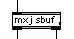

|
| Using | How to use the mxj object |
In Java speak, a class is a prototype that defines a set of variables (data) and methods (actions). Java objects are created as members of a class. The java directory in your Max installation has a subdirectory called classes in which you will keep the Java classes that can be used with mxj. When you create a new mxj object in Max, the first instantiation argument must be the name of a class that exists in this directory. Successfully instantiating an mxj object creates two objects: an mxj Max object and internal to that a Java object of the class that was supplied as an argument. We can call these two objects "peer" objects - the mxj object is simply a shell that acts as a conduit between the worlds of Max and Java. Note that unlike the name of regular Max objects, the name of a Java class is case-senstive. The figure below shows an mxj object that has successfully created an instance of the sbuf Java class.
The class files that live in the classes folder are what are known as bytecode files. Unlike C externals, which are compiled into platform-specific machine code, Java bytecode can be executed on any system that will run the JVM (Java Virtual Machine). This means that unlike Max externals, mxj-compatible class files are cross-platform. The .java code that is used to compile these bytecode files lives in the same directory. If you are a developer you can use these files as starting points for your own mxj-compatible Java classes and change the behaviour to suit your needs. If you are not a developer, well... there's never been a better time to learn how to develop your own Max objects! It's easier than you think.
It is possible to collect multiple class files into a package. In the java/lib directory you can find one such package named max.jar. This package contains the code that facilitates communication between Max and Java; the file's placement within the lib directory is essential. Cycling '74 does not distribute the source code for these classes, but we do make available the specification of the API (Application Programming Interface) so that developers can use the code to make their own classes.
The java/help directory contains a selection of patches that you can use to explore the classes we've implemented.